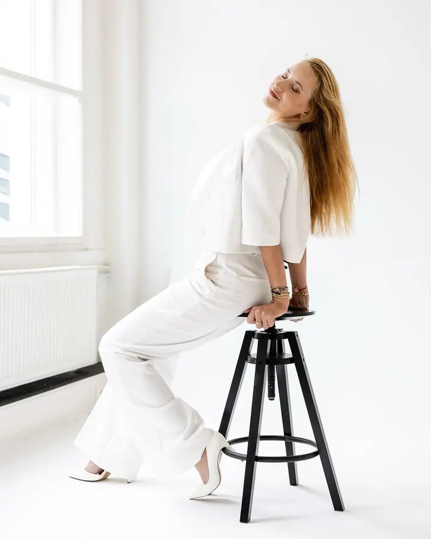
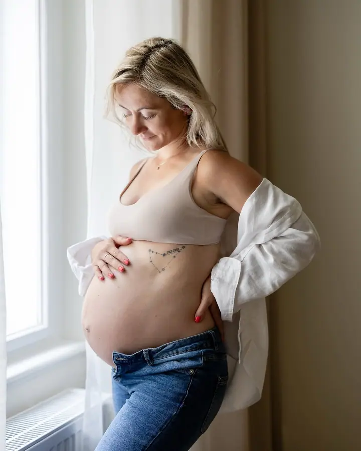
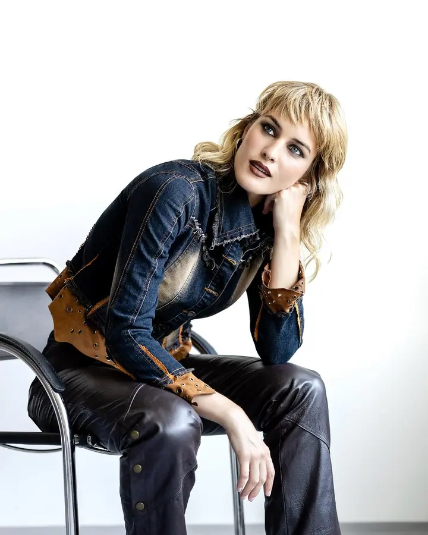
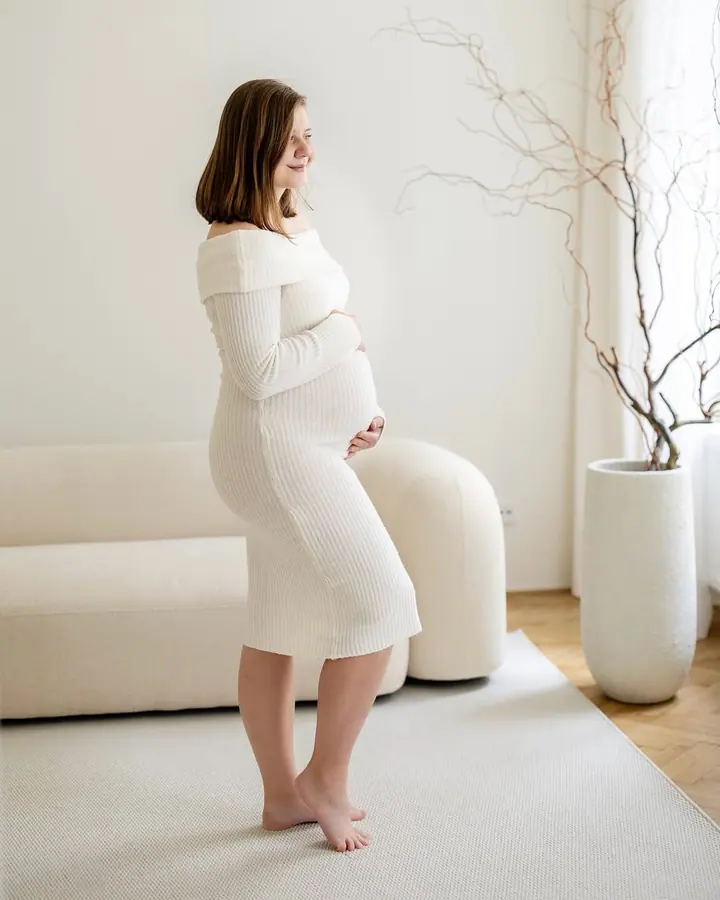

Portrétní focení pro ženy · Pure Femme Essence
Focení jako zážitek v profesionálním ateliéru, s líčením od vizážistky, stylingem a pomocí s pózováním. Je pro každou ženu bez ohledu na věk a hlavně pro ty, které říkají: „Já se neumím fotit.“





Jmenuji se Irma Březina a v Praze fotím portréty žen, svatby i těhotenské a newborn focení. Fotím v ateliéru i venku a s pózováním vám pomohu, i když máte pocit, že se fotit neumíte.
Více o mně
„Nestavte sama sebe na poslední místo a přijďte si užít den v ateliéru, kde vzniknou elegantní, přirozené a nadčasové fotografie.“
— Irma Březina
Focení jako zážitek v profesionálním ateliéru, s líčením od vizážistky, stylingem a pomocí s pózováním. Je pro každou ženu bez ohledu na věk a hlavně pro ty, které říkají: „Já se neumím fotit.“
Fotím intimní svatby ve dvou i velké svatby snů, v Česku i na Havaji. Prvních několik upravených fotek máte do 24 hodin a kompletní online galerii do 30 dnů.
Fotíme venku, v ateliéru nebo u vás doma. Bříško i miminko můžete nafotit v jednom výhodném balíčku, nebo si dopřát těhotenské focení ve stylu fashion & beauty s vizážistkou a stylingem.
Párové, rodinné i jógové focení venku nebo v ateliéru. Koncept vymyslíme spolu, aby vás bavil a vystihoval právě vás.
Jmenuji se Irma Březina a jsem portrétní a svatební fotografka z Prahy. Fotím ženy, páry, rodiny, nastávající maminky a čerstvě narozená miminka a samozřejmě svatby. Ke každému focení vymýšlíme koncept spolu, aby vás bavilo a fotky vystihovaly právě vás.
Srdcovou záležitostí je pro mě Pure Femme Essence, portrétní focení pro ženy. Pracujeme, staráme se o druhé a samy na sebe často zapomínáme. V ateliéru vás proto nalíčíme, učešeme, vymyslíme vám styling a pak už si focení jen užíváte. Nečekejte, až zhubnete nebo až budete mít čas, zasloužíte si to už teď.
Svatby na Havaji fotíme a organizujeme s mým manželem, fotografem Honzou Březinou, už 10 let, přesně od té naší vlastní. Havaj známe dobře, jezdíme tam každý rok a chvíli jsme tam i žili. Svatby ale fotím samozřejmě i v Česku a na svatbě jsem nenápadným, ale všudypřítomným svědkem celého dne.
Vyberte si balíček a pošlete mi zprávu přes formulář. Ozvu se vám a společně najdeme termín.
Probereme vaše představy po telefonu, přes videohovor nebo osobně. Poradím vám se stylingem a oblečení vám můžu i zapůjčit.
Fotíme v ateliéru, venku nebo u vás doma. Pomohu vám s pózováním, aby všechno působilo přirozeně a atmosféra byla uvolněná.
Fotky dostanete v online galerii. U svateb posílám první upravené snímky do 24 hodin a kompletní galerii do 30 dnů.
Určitě. Focení je určené pro každou ženu bez ohledu na věk nebo zkušenosti před objektivem. S pózováním vám pomohu a vytvoříme spolu fotky, na kterých se budete líbit sama sobě.
Před focením spolu probereme styling a podle balíčku vám oblečení můžu zapůjčit. U portrétního focení pro ženy počítejte s jedním až třemi outfity.
První upravené fotografie vám pošlu do 24 hodin od konce svatby, kompletní online galerii do 30 dnů. Galerii pak můžete sdílet s rodinou a přáteli.
Ano, na to je balíček Těhotenské & newborn: dvě focení, 35 fotek, v ateliéru nebo u vás doma, za 6 700 Kč. Pronájem ateliéru a vizážistka se platí zvlášť.
info@irmabrezina.cz
Praha · Havaj (Maui)